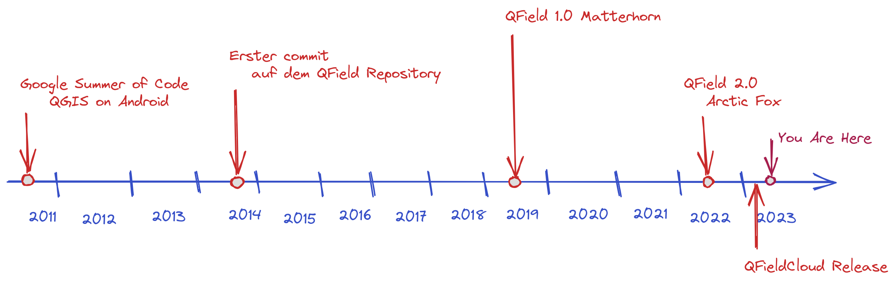
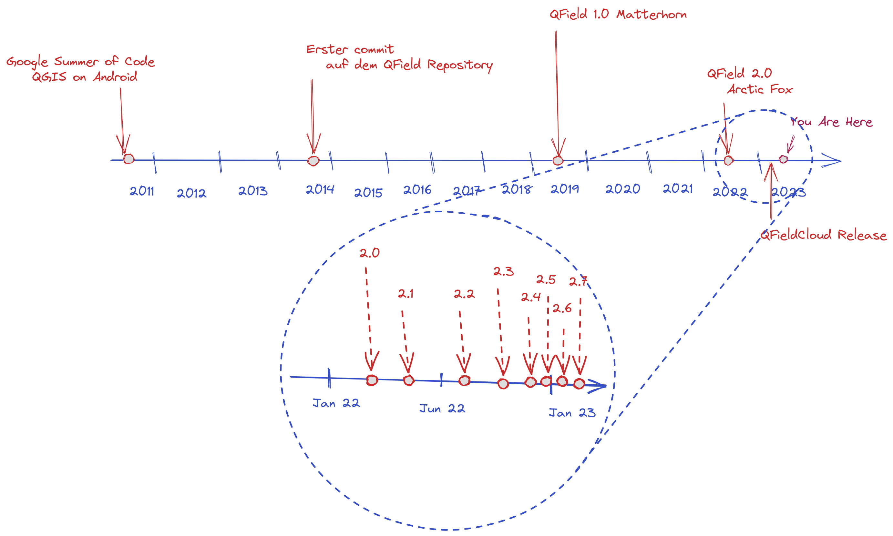
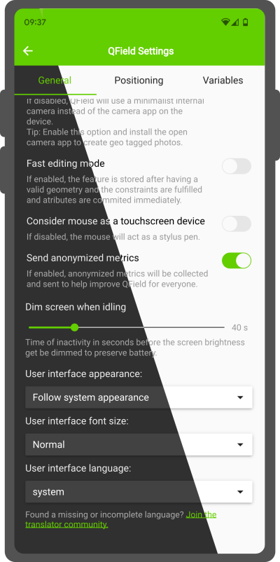

QField
Professional Field Work
 Open source Geoninjas
Open source GeoninjasMade in Switzerland
Why QField

Because
data is
outside the office
What is QField?

The
mobile data collection app for QGIS
 Minimalist UI
Minimalist UI
 Beautiful cartography
Beautiful cartography
 Powerful tools
Powerful tools
 Efficient interaction
Efficient interaction
 Beneficial integrations
Beneficial integrations
 Professional hardware
Professional hardware


Supported Platforms
 QField on Windows
QField on Windows
 QField on iOS
QField on iOS
GPS and Tracking
 Tracking on Point Layers
Tracking on Point Layers
High Precision GNSS Integration
 Position averaging
Position averaging
 IMU
IMU
Professional game changer
Navigation and stakeout

Stakeout with precise view
External sensor integration
Working with attributes

QR Code-Reader

Time
Atlas printing
Relation integration
Screen lock
Multi editing attributen
Height profile
Dark mode

Multimedia
Rotation
Opening individual datasets
And much more ...
- Search for attributes and coordinates
- Measurement tool
- Geometry editing and drawing
- GNSS and tracking
- Dashboard widgets (QML/HTML)
 Seamless Synchronisation
Seamless Synchronisation
 QFieldCloud
QFieldCloud
qfield.org/get
2.8.1 Insightful Indri
800K Android, 40K iOS and xx Windows downloads
4.8⭐ on 5.7K reviews
200K users monthly
50K users QFieldCloud
UN Opensource Geo-data collection tool
 Be part
Be part Your own App
Your own App